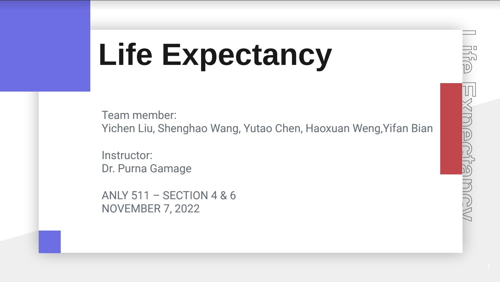

Machine Learning Project (Data Science and Analytics / Personal)
The project includes the whole life cycle of a data science problem and is documented on a website with Python, R and HTML/CSS. 5 categories of machine learning models are applied to solve two classification tasks.
Link to this Project

Statistical Analysis Report (Prob & Stat / Teamwork)
Methods like hypothesis testing, time series forecasting, regression, and others are applied to the data set to determine the trend and characteristics of the data with R. My parts are time series forecasting and hypothesis testing.
Link to this Project